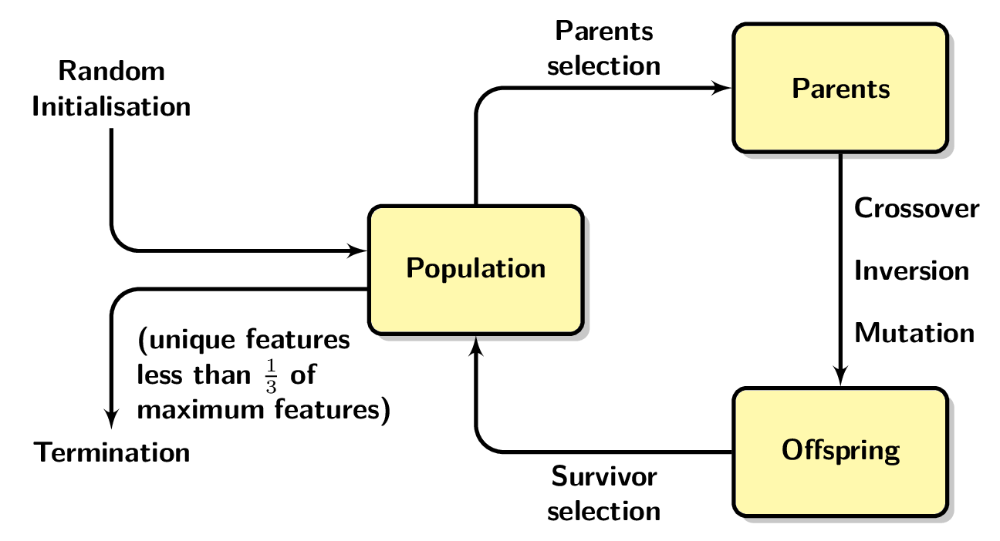

\documentclass[margin=3pt]{standalone}
\usepackage[utf8]{inputenc}
\usepackage{tikz}
\usetikzlibrary{arrows,shadows,positioning}
\tikzset{
frame/.style={
rectangle, draw,
text width=6em, text centered,
minimum height=4em,drop shadow,fill=yellow!40,
rounded corners,
},
line/.style={
draw, -latex',rounded corners=3mm,
}
}
\begin{document}
\begin{tikzpicture}[font=\small\sffamily\bfseries,very thick,node distance = 4cm]
\node [frame] (pop) {Population};
\node [above=2cm, text width=2cm, align=center, left of=pop] (init) {Random \\ Initialisation};
\node [below=2cm, text width = 2cm, align = center, left of=pop] (term) {Termination};
\node [frame, above=2cm, right of=pop] (parents) {Parents};
\node [frame, below=2cm, right of=pop] (off) {Offspring};
% termination condition label
\node [draw=none, text width=3cm, above right = -0.1cm and -1cm of term ] () {(unique features \\ less than $\frac{1}{3}$ of \\ maximum features)};
\path [line] (parents)
-- node[right,align=left,pos=.5] {Crossover\\[3mm]Inversion\\[3mm]Mutation}
(off);
\path [line] (init) |- (pop.170);
\path [line] (pop.190) -| (term);
\path [line] (off) -| node[below,pos=.25, align=center] {Survivor\\ selection}(pop);
\path [line] (pop) |- node[above,pos=.75, align=center] {Parents\\ selection}(parents);
\end{tikzpicture}
\end{document}Created by David Li